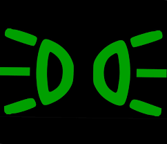
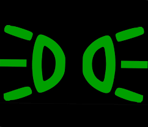

Światła mijania (krótkie)

Światła drogowe (długie)

Światła pozycyjne
Światła przeciwmgielne przednie
Światła przeciwmgielne tylne
Kierunkowskazy
Światła awaryjne
Światła mijania (krótkie)
Światła drogowe (długie)
Światła pozycyjne
Światła przeciwmgielne przednie
Światła przeciwmgielne tylne
Kierunkowskazy
Światła awaryjne
ABS (ang. Anti-Lock Braking System) uniemożliwia blokowanie się kół w trakcie hamowania. Niezależnie od pogody, przyczepności, rodzaju nawierzchni i innych zmiennych, ABS utrudnia wpadnięcie w poślizg.
ASR (ang. Acceleration Slip Regulation) jest to inaczej system kontroli trakcji, również służy niedopuszczeniu samochodu do wpadnięcia w poślizg, jednak uaktywnia się on podczas ruszania i przyspieszania.
ESP (ang. Electronic Stability Program) jest on ściśle połączony z systemami ABS i ASR. Podczas pokonywania zakrętów niejako przejmuje nad nimi dowodzenie i powoduje zahamowanie jednego lub kilku kół (na polski, działa antypoślizgowo przy zakrętach, zmianach pasów ruchu itp.)